Day 10.. later start, The llama ranch, Green meadows, Big city?!, One more section knocked out

From the Journey
Getting out of the hotel early, I walked to the small town diner, that sat in front of the hotel. This allowed me time to edit photos and FaceTime family members for Father’s Day. I settled into the diner for quite a while. I had a lot of work to do but, I was tracking rain early this morning that I wanted to avoid.
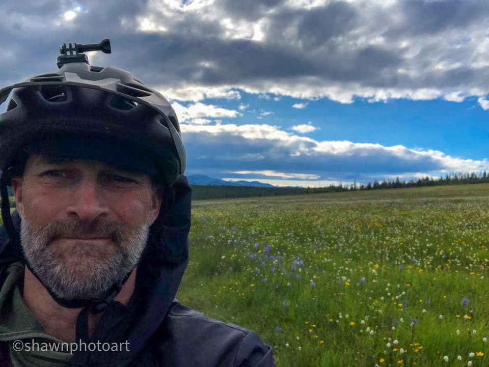
From the Journey
After my first big climb and a dangerous rocky downhill ride I saw a bunch of bikes, pulled over in front of a quaint little mountain home nestled in Green Meadows, and surrounding by pine tree covered hills. Walking up, I didn’t see anybody, but on the front porch, there was a refrigerator filled with drinks, and a note that said grab a drink, sandwich , and find yourself a place to rest. I grabbed a beer and a sandwich, and started walking around, looking for the rest of the riders.
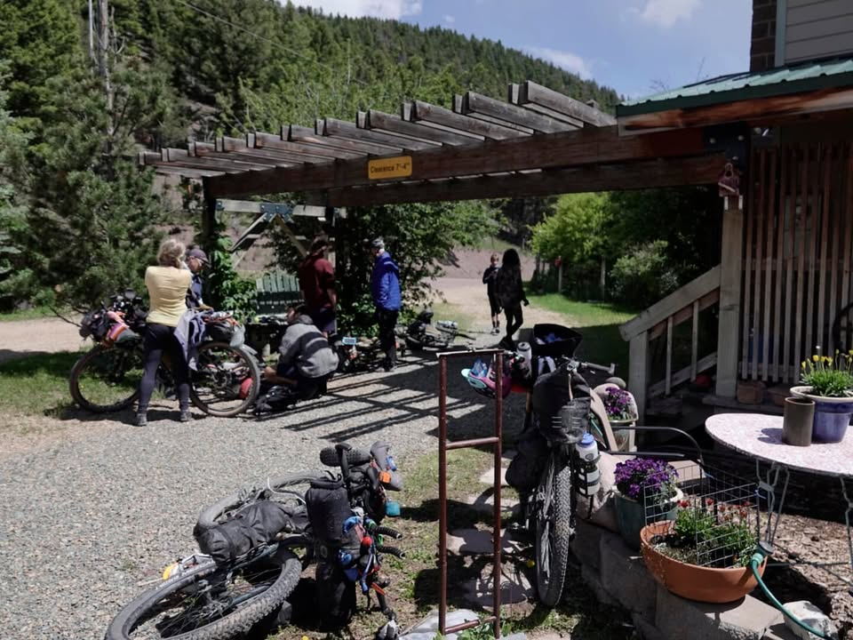
From the Journey
I found myself being welcomed into the dining room, where everybody was gathered resting, warming up and conversing over days events. Our host welcomed me in and offered everything that they have. Come to find out I’m at the Llama Ranch!
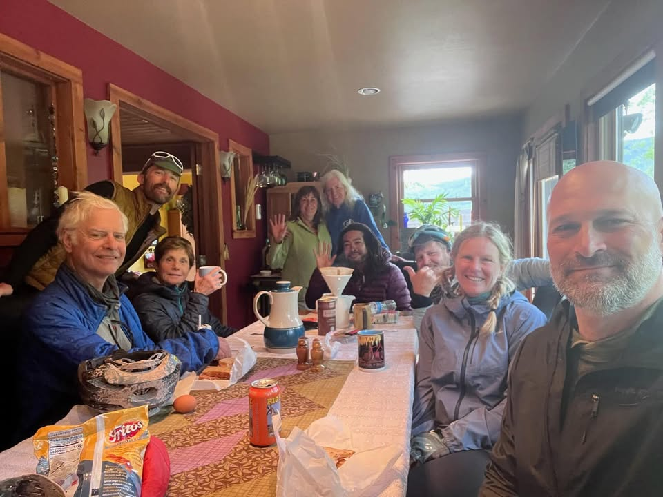
From the Journey
The Llama Ranch is a haven for bike Packers. They have accommodations in cabins in TP‘s. Many places to sit and talk around a fire, and a bike maintenance set up. The only cost to utilizing any of their accommodations is they ask you to pay it forward. Their message is, they want to give kindness to people here, so others will take kindness and deliver it across the world. What an amazing payment system.
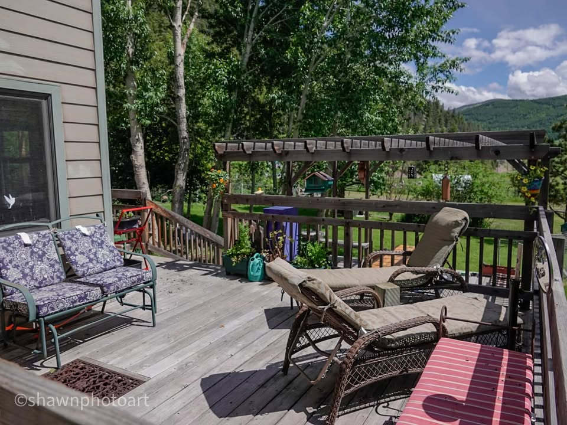
From the Journey
The temptation is staying at the Llama Ranch for the night I was high. But my goal for the day is the bustling Capital city of Montana, Helena. Leaving out of the Ranch was physically hard with a slight upper grade and headwind I found myself in my lowest gear, struggling.
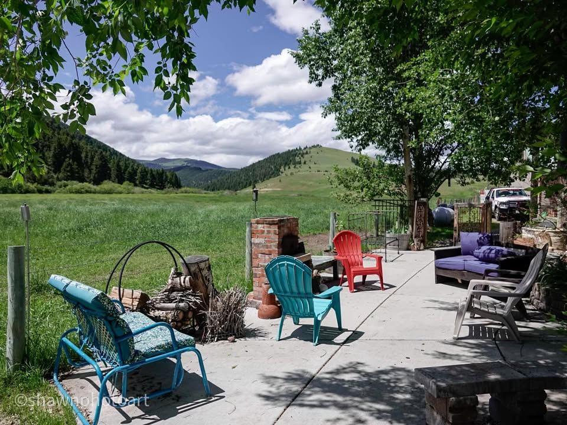
From the Journey
Climbing these two hard peaks, my thoughts drift to the anticipation of getting another gear set tomorrow. While the climbs were hard, the scenery was spectacular. Flowered covered Meadows with crisp clean streams, surrounded by hills and mountains, blanketed by pines seemed to be cut out of a postcard.
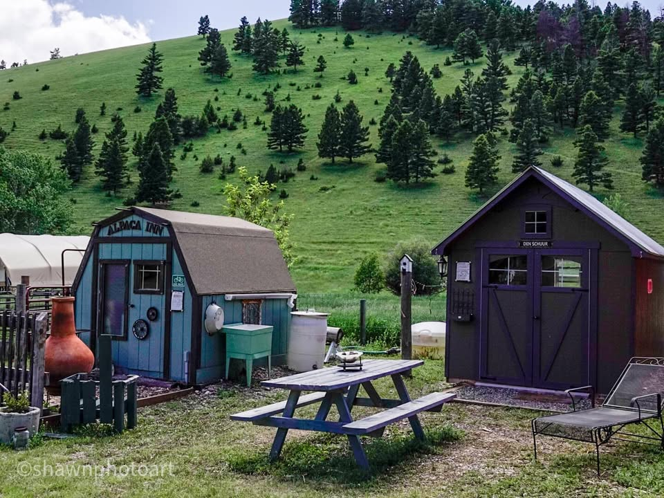
From the Journey
I arrived in Helena at 9:30 in the evening, and still had quite a bit of sunlight to find my way to the hotel. Out of all the state capitals that I’ve been to this is by far the smallest for the population of only 33,000. Late Sunday night, the city seems quiet, and even in the downtown area the few cars that I saw were hospitable and let me pass.
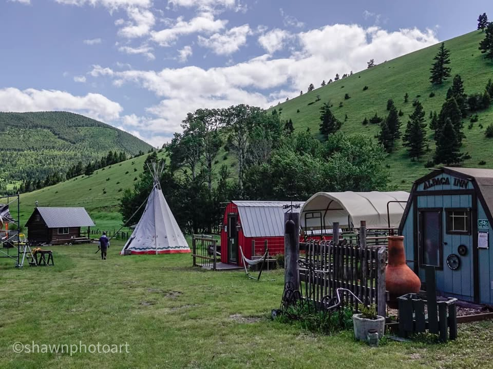
From the Journey
The exciting beeping from my bike computer said that I was done with another section. 2 sections knocked out and five more to go. I’m not exactly sure how far I’ve traveled yet, but calculating the rest of the sections I have about 1700 miles to go.
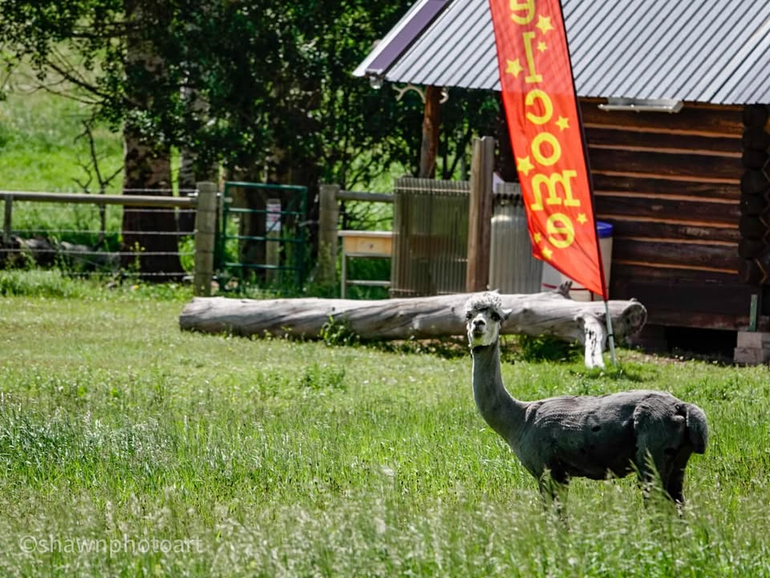
From the Journey
#Llamaranch #shawnphotoart #montanacontinentaldivide
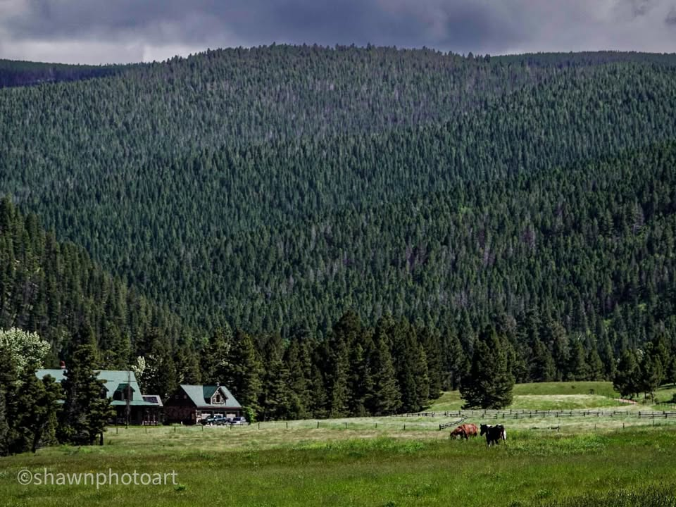
From the Journey
#continentaldivide
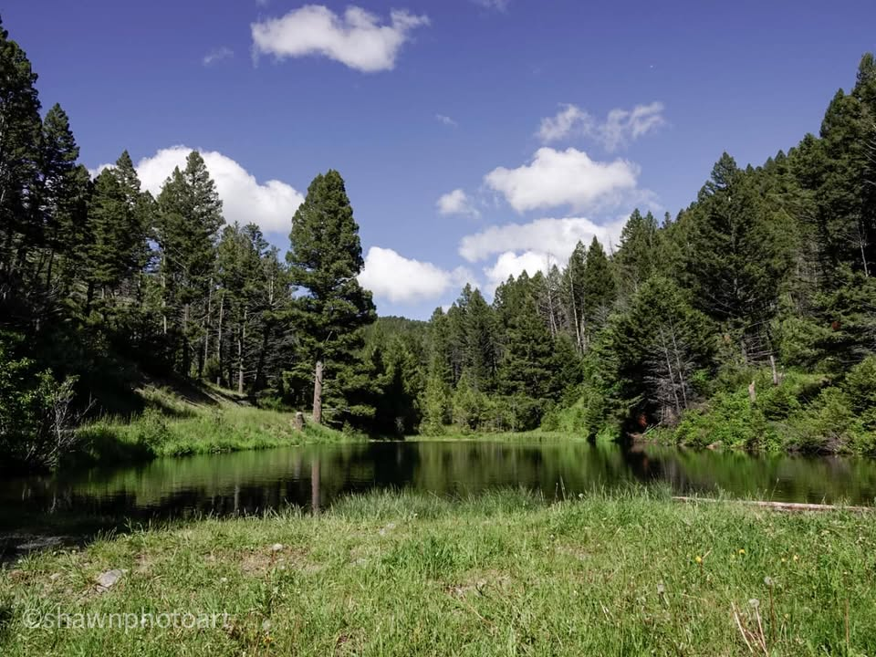
From the Journey
#CDT
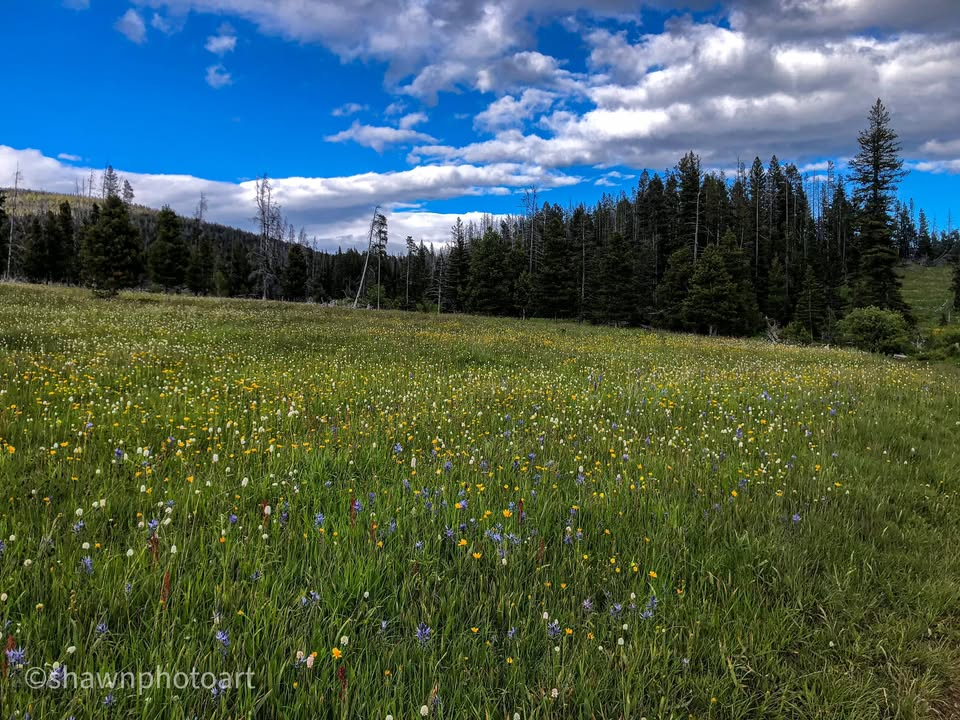
From the Journey
#cdt2023